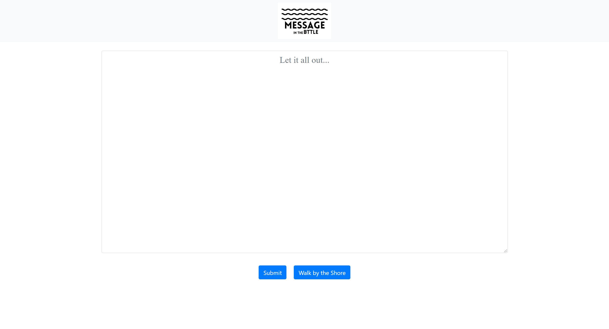

Inspired by the stories of lonely pirates trapped in an anonymous island, where the only way to communicate with the outside world is the put a message in a beer bottle and hopefully someone from the main shores recieve the message.
From this project, I wanted to create a platform for people who felt like those pirates, trapped in an island, with nobody to talk to, communicate with the outside world through the similar concept.
This website is specifically designed and built not purely for entertainment but to recognize that we are humans and sometimes we have thoughts in our mind that have no one to share with.

My goal is to create a minimalist, clutter-free design, which is reflected on the screenshot above. Such a design choice is inspired by the noises we had in our lives. Oftenly there are too many things in live to focus on, and the purpose of this website, again, is to recognize all those noises and remove them to create a peaceful, clutter-free, ad-free platform for those in need to use it.
You can visit this website here
As the website is designed for users that might not be in their best wellbeing, it's important to direct the users to the right resources they might need to.
After the user submit their message to our platform, we make sure that the user understand that suicide is not a solution and we redirect the user to the National Suicide Prevention's website and hotline if they chose to.
To me, this is a very important feature to add when designing this platform. A course I took - "Introduction to Digital Information" challenged me to think beyond the usability of a technology but who they are built for, why they are build, and how do we address the core theme of the technology correctly.
Currently, the users are able to submit their messages to the firebase server, however, there isn't a way for users to read messages that are sent by the other users.
However, inspired by being in the beach, the linkelyhood of getting across a message in a bottle is very rare. I want to incorporate the similar idea into the platform. Hence, even if the user clicked the button, it's highly unlikely that the user is able to read a message that was sent by the other user.
This feature is still currently in development and is planned to go live by the end of September 2020.
I have made this project open source for whoever are interested in improving the platform. However, I would need to personally upload the code to firebase in order for it to go live. I will be monitoring the activity frequently and will make changes as I see fit.
You can access the github repo here
You can contact me at sgoh4@wisc.edu